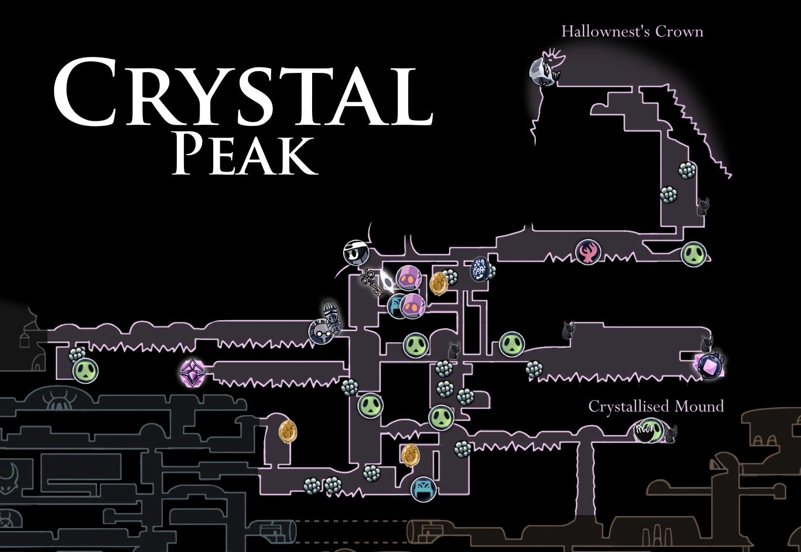
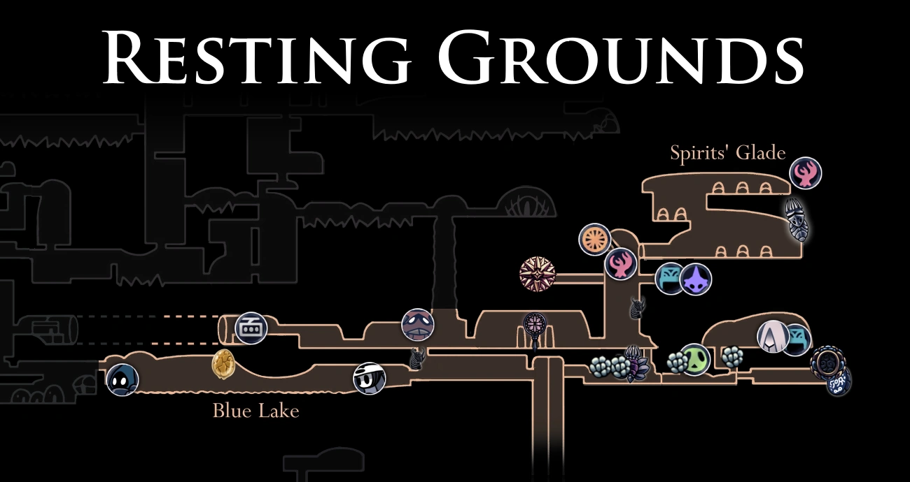
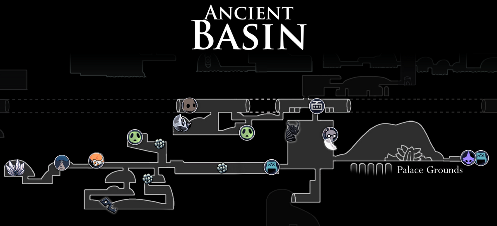
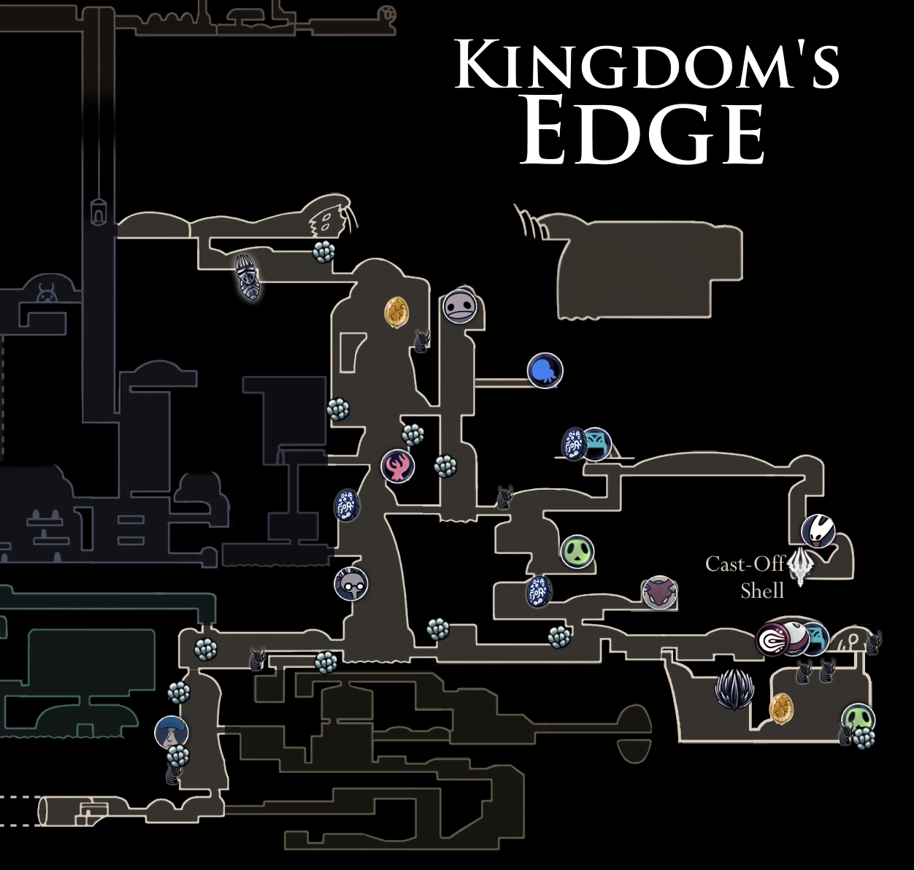
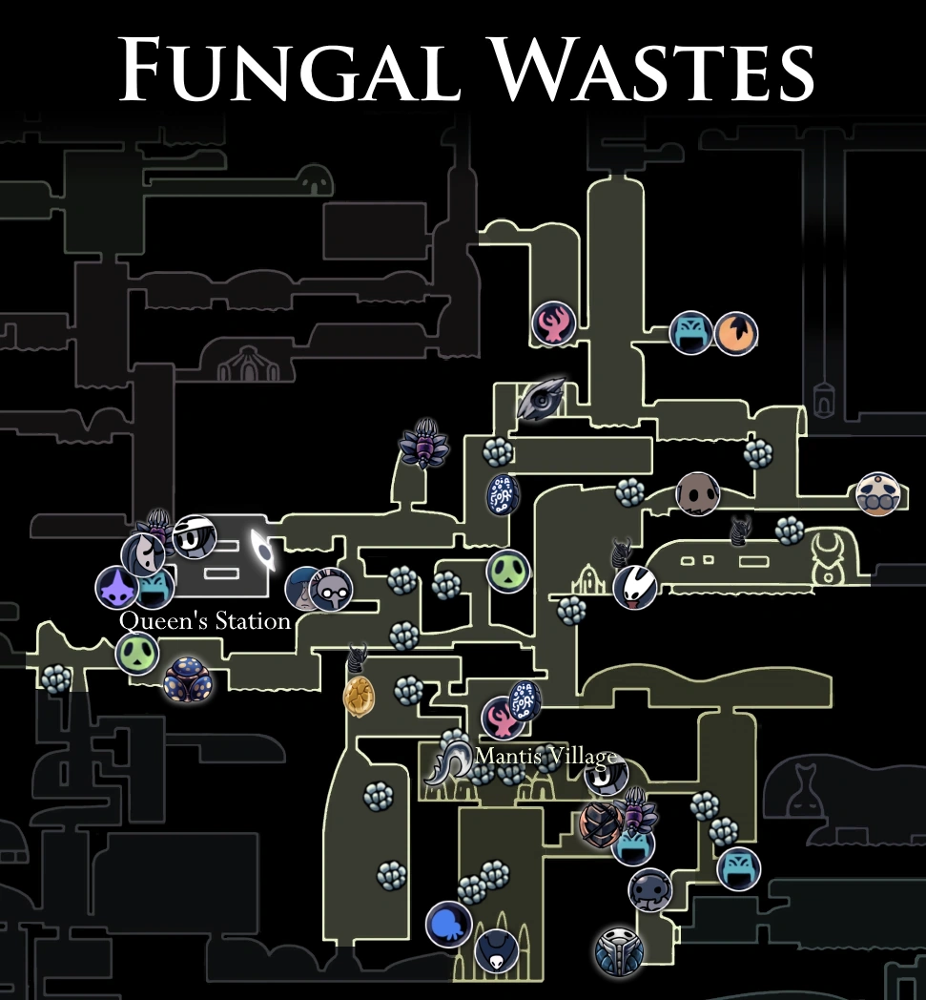
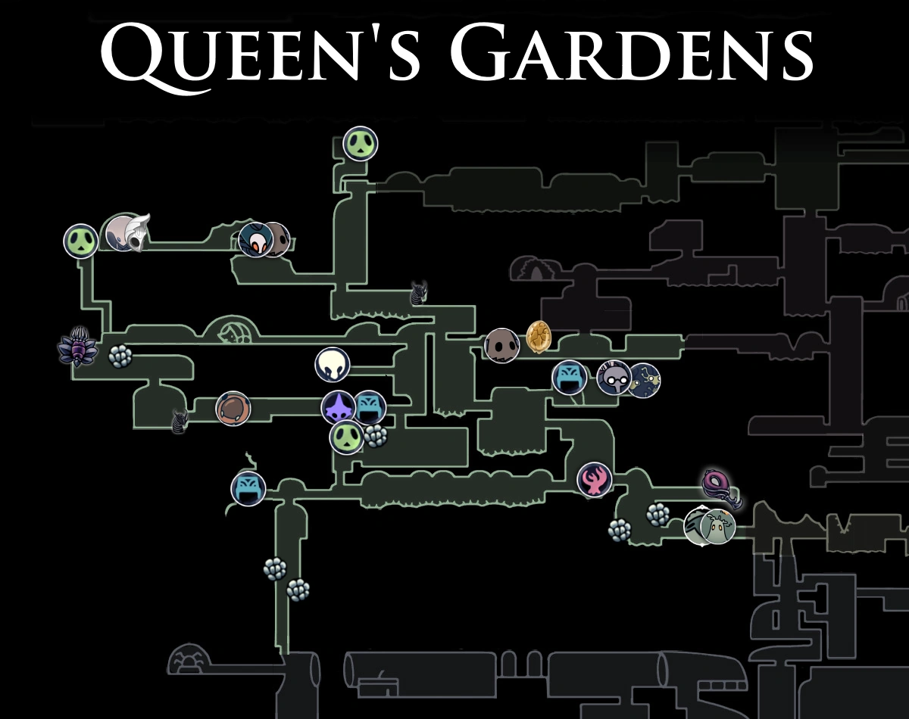

Geografía del Reino Caído

Ciudad de Lágrimas
Antiguo corazón de Hallownest: una ciudad monumental siempre bañada por lluvia. Sus canales y edificios góticos conservan ecos de la antigua civilización y las soñadoras. Es el hogar del Santuario de las Almas y la Torre del Vigía.

Greenpath
Un paraje frondoso cercano a la entrada de Hallownest. Aquí la flora se entrelaza con rutas escondidas y enemigos más ligeros. Es un lugar vibrante lleno de vegetación ácida y musgo, donde Hornet pone a prueba a los viajeros.

Cruces Olvidados
Las encrucijadas olvidadas: vastos túneles y enemigos básicos que sirven como eje para acceder a muchas otras regiones. Antaño bulliciosas rutas comerciales, ahora son el primer desafío para quienes descienden de Bocasucia.

Nido Profundo
Zona oscura y claustrofóbica habitada por criaturas araña y trampas mortales. Es una de las áreas más peligrosas del reino, famosa por sus pasadizos laberínticos, oscuridad opresiva y la tribu de las tejedoras.

Cumbre de Cristal
Una montaña minera resplandeciente llena de cristales rosados que cantan. La maquinaria industrial aún funciona, y los mineros, enloquecidos por la infección, continúan su trabajo eterno entre cintas transportadoras y láseres.

Tierras de Reposo
Un lugar sagrado de entierro para los insectos de Hallownest. Aquí reside la Vidente, última de su tribu, y se ocultan los secretos de la Esencia y el Mundo de los Sueños. La atmósfera es solemne y silenciosa.

Cuenca Antigua
En lo más profundo del mundo, donde la luz apenas llega y el vacío comienza a filtrarse. Es un lugar desolado y gris, hogar del Palacio Blanco oculto y de criaturas corrompidas por la oscuridad primordial.

Límites del Reino
Una región exterior azotada por la ceniza que cae del cadáver de un gran Wyrm. Es un terreno vertical y peligroso, lleno de guerreros primitivos y el coliseo de los insensatos, donde se busca la gloria en combate.

Páramos Fúngicos
Cavernas húmedas repletas de hongos gigantes y esporas explosivas. Es el territorio de la tribu Mantis, guerreros orgullosos que rechazaron la infección y protegen su aldea en el corazón de este laberinto fúngico.

Jardines de la Reina
Lo que una vez fue un refugio real, ahora es una jungla de espinas y plataformas traicioneras. A pesar del peligro, conserva una belleza melancólica y esconde el retiro final de la Dama Blanca.